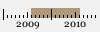
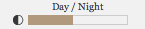

Nine Point Five, an earthquake visualization.
What is it?
Nine Point Five is an interactive visualization of earthquakes over the past 30 years. It uses the newly developed WebGL technology to create an fluid and interactive in-browser experience, chugging through the data and presenting these events over an interactive Earth.
Why can't I view it?
You'll need to download and setup a browser that supports WebGL. Currently this means you'll have to follow a few steps to get the latest development build of your favorite browser and enable WebGL support.
What does it look like?

How does it work?
Use your mouse and scrollwheel to control our planet Earth. For a given time range, you will be presented with the most significant earthquakes on the right side panel. Selecting an earthquake will fly you there, and display more information about that event.
Select the time range of data to display, from 1977 to 2010.
 Earthquakes are displayed as a particle cloud.
Earthquakes are displayed as a particle cloud.
 Earthquakes are displayed as lines.
Earthquakes are displayed as lines.
 Rings surround the locations of earthquakes, allowing for high detail while you zoom in.
Rings surround the locations of earthquakes, allowing for high detail while you zoom in.
 A non-interactive mode (think of it like a screensaver), which
takes you on a tour of the most significant earthquakes for the current time range.
A non-interactive mode (think of it like a screensaver), which
takes you on a tour of the most significant earthquakes for the current time range.
 Filter earthquakes by increasing magnitude, generally a magnitude over 6 is considered significant.
Filter earthquakes by increasing magnitude, generally a magnitude over 6 is considered significant.
Position the sun, shadowing or lighting Earth.
 A techy option to control how anti-aliasing is performed, by default supersampling is enabled.
A techy option to control how anti-aliasing is performed, by default supersampling is enabled.
Where's the tanks and guns?
The increasing power and availability of graphics processors, and the access to them on the web, means more than just games. We can now build beautiful interactive experiences in areas that would have traditionally not have considered 3D. Nine Point Five tries to explore this new medium with a concentration on the design and integration within the page, and an aesthetic that could feel at home in an encyclopedia or news article.
Whose behind it?
Dean McNamee and Marcin Ignac, two designers working with technology.